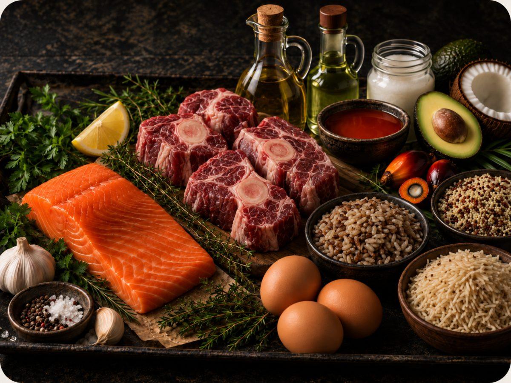
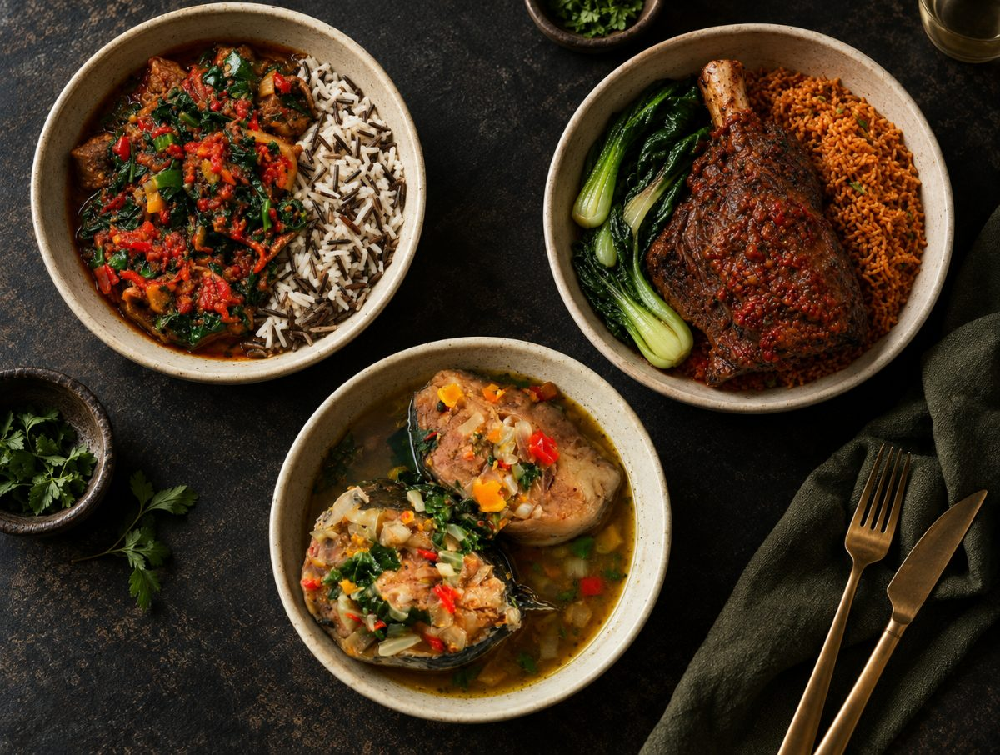
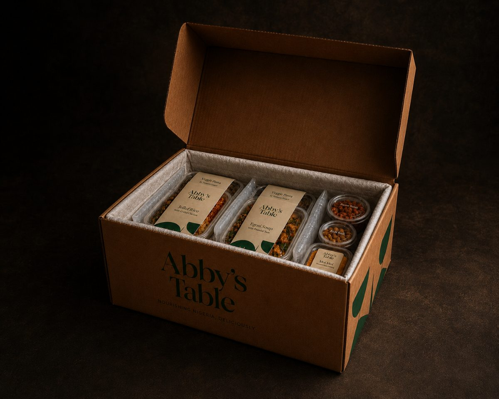

Nigerian fusion food made properly. With carefully chosen ingredients, nutrition at the core, bold flavour and complete transparency.
Five simple standards guide everything we make, from the ingredients we choose to the way we cook, so every meal is delicious, nutritious and made with integrity.
We start with ingredients chosen for quality, flavour and nutrition.

Carefully sourced proteins
Including wild-caught seafood, grass-fed meat and organic eggs.
Better cooking oils
Extra virgin olive oil, avocado oil, coconut oil and certified sustainable organic red palm oil. Never seed oils.
Whole grains & traditional staples
From traditional ofada rice to quinoa and wholegrain basmati, offering more choice beyond standard white rice.
Whole spices, fresh aromatics and slow-simmered stocks, used to build deep, layered flavour.
Marinades, stocks & herbs
Flavour built with house-made marinades, slow-simmered stocks, fresh herbs and aromatics.
No commercial seasoning blends
No bouillon cubes or powders, added MSG or commercial seasoning mixes used to build flavour.
Traditional techniques
From cooked-down pepper bases to richly cooked stews, flavour is developed patiently and properly.
Nutrition considered from the start, through balanced plates, varied ingredients and thoughtful portioning.

Balanced by design
Protein, vegetables and quality carbohydrates brought together in considered proportions.
Variety across the menu
A broad mix of proteins, vegetables, whole grains and traditional staples keeps meals varied.
Portions with purpose
Serving sizes are designed to feel satisfying while keeping the overall plate in balance.
Prepared in small batches, with attention given to every stage from cooking to packing.

Small-batch cooking
We cook in limited quantities, giving each dish the time and attention it needs.
Cooked for your order
Food is prepared for scheduled cooking runs rather than produced in large volumes and stockpiled.
Handled properly
Dishes are blast chilled, carefully packed and shipped to preserve quality from our kitchen to yours.
Clear ingredients, straightforward labelling and honest information about what goes into every dish.
Full ingredient information
Ingredients and allergens are clearly listed, so you know exactly what you’re ordering.
Nutrition made clear
Nutritional information is provided for every dish in a simple, easy-to-understand format.
Clear from kitchen to customer
No vague claims, hidden shortcuts or confusing language, just clear information about our food.
Choose at least six dishes, personalise where available, and pick your delivery date.